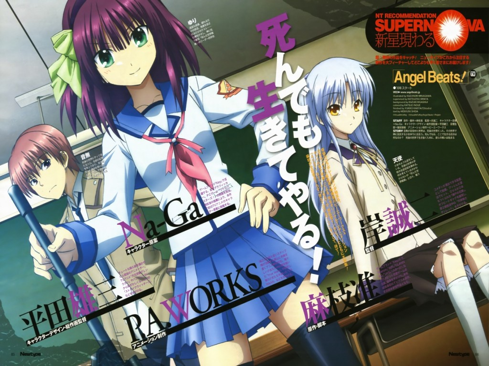

Английское название: Angel Beats!
Русское название: Ангельские ритмы!
Число серий: ТВ (13 эп.), 25 мин.
Жанр:Мистика, Приключения, Комедия
Создатели:Киси Сэйдзи
Оценка:9/10
Год выпуска: 2010

Описание аниме: Главная героиня сериала — девушка с замечательным именем Юри — возглавляет отряд SSS (сокращение от Shinda Sekai Sensen, что в переводе означает Фронт Мира Мёртвых), который целиком и полностью состоит из уже попавших на тот свет людей, которые некогда вели безрассудную жизнь, а теперь восстали против Бога и сражаются со всё ещё верными ему ангелами..
Не зря говорят, что японская школьная система – самая тяжелая и суровая. Ибо очнулся парень по фамилии Отонаси (имя он забыл) на том свете – а там снова школа! Вот только, несмотря на красивую обертку, школа эта больше походит на исправительную колонию для тех, кто слишком рано покинул бренный мир и не успел (или не захотел) познать правила и законы «реального общества». То есть, покрутится в ней юный воспитуемый, научится ходить строем и участвовать во внеклассных мероприятиях согласно плану – и пора отправляться на этап согласно накопленной карме. Только почему-то не всем воспитуемым это нравится…
Самые разные школьники, решившие не исчезать, а разобраться, за что и от кого получили «новый срок», неформально объединились, создав «Фронт загробного мира» под командой волевой и практичной Юри. Их цель – получить ответы, их жизнь – отрицание навязанных правил, а средства достижения цели – вечная борьба с администрацией и «хозяйкой» школы по имени Тэнси (ангел). Вот в такую отрицательную компанию влился Отонаси - главный герой поневоле. Теперь парню гарантированы веселая жизнь, верные друзья и абонемент на концерты лучшей местной группы «Мертвые девушки и Чудо-Юдо»..
Назад